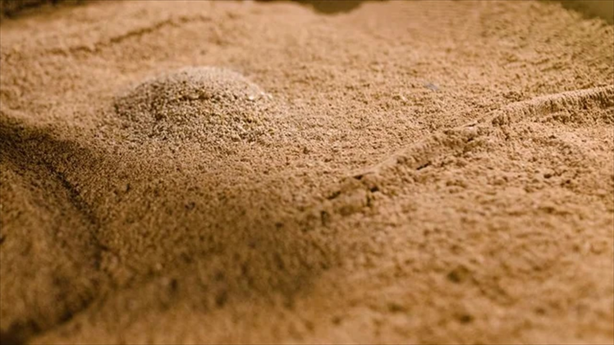
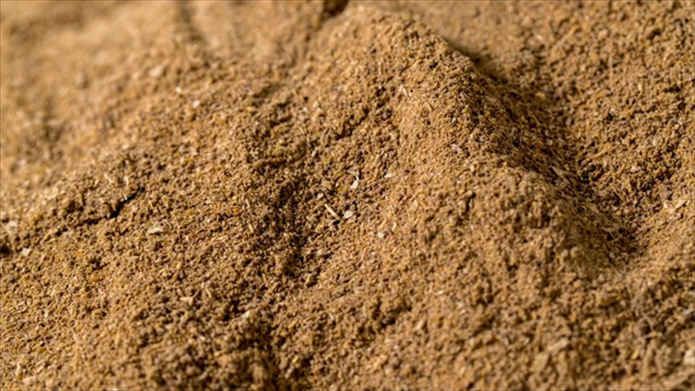
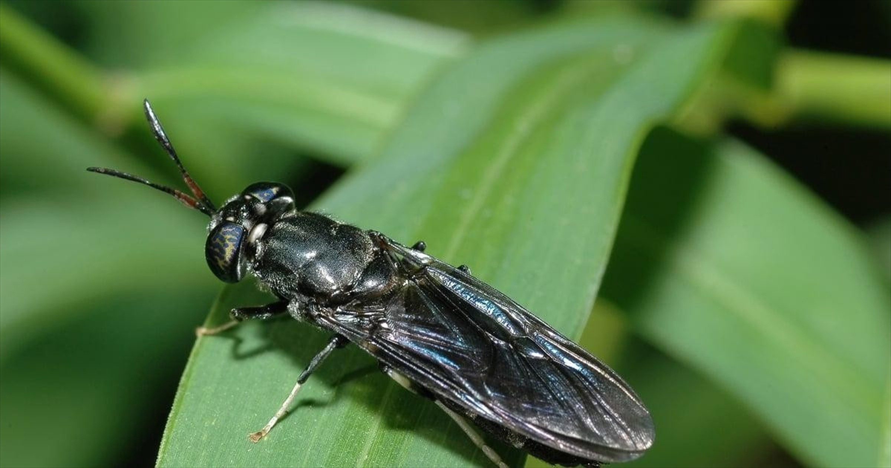

From natural essentials to highland coffee and agricultural estates. Explore the three distinctive branches of CentroFarms™ in one connected experience.
BIOLOGICALLY ACTIVE SOIL AMENDMENT · BLACK SOLDIER FLY FRASS
CENTROFARMS™ AGRISOLUTIONS
EnviroPro 3-2-1 Organic Fertilizer
Increased Yields ● Pest and Disease Suppression ● Control of Nematodes & Broad-Spectrum Pathogens
EnviroPro is more than a fertilizer – it's a biologically active soil amendment rich in nutrients, chitin, and beneficial microbial communities. The naturally occurring chitin in BSFL frass confers functional properties that stimulate chitosan production, supporting plant defenses against disease-causing pathogens and plant-parasitic nematodes. These biological interactions help optimize soil health, nutrient cycling, root quality, and overall turf vigor.
EnviroPro is the residual product of raising black soldier fly larvae (Hermetia illucens). The product sheet lists exoskeletons, nutritional remnants, excrements and ground larvae, and states that no bone meal is added.
01 / GUARANTEED ANALYSIS & SOIL HEALTH
EnviroPro 3-2-1
Nutrient
Analysis
Total nitrogen (N)
3.00%
Ammoniacal nitrogen
0.10%
Ammoniacal nitrogen
0.27%
Water-soluble nitrogen
2.63%
Available phosphate (P₂O₅)
2.00%
Soluble potash (K₂O)
1.00%
Additional elements: Fe, Mg, Mn and Zn.
Organic matter that supports healthier soil
Frass application significantly increases soil organic carbon (SOC). Studies have noted up to a 22% increase in topsoil carbon after a single growing season. This added organic matter improves soil structure, enhances water retention and aeration, and helps plants become more resilient to environmental stress.
02 / CHARACTERISTICS
What’s in the frass
90%Organic matter6.2pH12:1C:N ratio
Other listed components include chitin / chitosan, antimicrobial peptides and amino acids. Density is listed as 38 lb for crumbles and 32 lb for DFG; the supplied sheet does not state the volume basis. Crumbles and ground frass are listed as OMRI-certified forms.
03 / APPLICATION
Home gardens & specialty crops
Pre-plant: 2.5–5.0 lb per 100 sq ft (0.12–0.24 kg/m²). Top-dress: repeat at the same rate every 30 days.
For greens, the document recommends layered application and short, intermittent watering to moisten granules before full irrigation. Adjust rates for plant type, growing environment and soil; follow the current product label.
04 / PACKAGING
Available product forms
OMRI-certified crumbles & ground frassSupersack tote40 lb bag
Product characteristics, certification and directions are summarized from the supplied product information. Confirm current label details and local requirements before use.
The 3-2-1 figures above are the product analysis listed in the supplied content; the approximately 3.6% nitrogen figure describes its general frass nutrient profile and is not the EnviroPro product analysis. OMRI status is not USDA organic certification. Application needs and results vary by crop, soil and growing conditions.
SOIL BIOLOGY & PLANT HEALTH
More life in the soil. More support for the crop.
Beyond supplying nutrients, black soldier fly frass is studied for the ways its chitin and organic matter interact with soil biology and plant defenses.
01 / BENEFICIAL MICROBES
Encourage a thriving soil community
Chitin-rich frass can support beneficial soil organisms, including plant-growth-promoting bacteria such as Bacillus and Streptomyces, and fungi such as Trichoderma. These communities can contribute to nutrient cycling and phosphorus availability.
02 / PLANT RESILIENCE
Support natural defenses
Chitin and chitosan can act as biological signals that prime plant defenses. Frass is also studied for its potential to support root health and improve plant tolerance to environmental stress.
03 / PEST & DISEASE PRESSURE
Explore biological suppression
Studies have reported suppressive effects against plant-parasitic nematodes and pathogens associated with Fusarium wilt, damping-off (Rhizoctonia, Pythium), grey mold (Botrytis) and early blight (Alternaria).
These are research areas, not guarantees of EnviroPro performance. Effects depend on the frass, application, crop, soil and conditions; use appropriate crop and disease management practices.
A CIRCULAR NUTRIENT CYCLE
From spent grains to soil health.
A circular pathway transforms residual grains through black soldier fly larvae into a biologically active soil amendment.
Spent Grains
Macro nutrients Micro nutrients
+
BSFL
Digestion Fermentation
→
Transformation
Microbes, chitin / chitosan, amino acids and lauric acid
=
EnviroPro 3-2-1
Plant nutrition Soil health Plant health
RESEARCH REPORTED IN THE SUPPLIED CONTENT
Promising results. Not a guarantee.
The source document summarizes study outcomes for different crops and conditions. These figures are reported examples, not product-specific performance promises.
7–27%higher corn grain yields reported versus urea or other organic fertilizers~50%higher lettuce yields reported versus conventional fertilizerUp to 135%tomato yield increase reported when frass was combined with reduced synthetic fertilizer rates
The supplied document does not include study citations. Results depend on crop, soil, climate, product and application; verify the underlying research before relying on or republishing these comparisons.
FROM LARVAE TO SOIL
A closer look at the natural material behind CentroFarms™ Agrisolutions.

01 / SOIL AMENDMENTFine frass texture

02 / PRODUCT DETAILOrganic matter

03 / NATURAL SOURCEBlack soldier fly
AGRICULTURE, WITH PURPOSE
Feed the soil. Grow with biology.
Black soldier fly frass puts residual material to work in a circular approach to soil health. Talk with CentroFarms™ about EnviroPro product information and application guidance.